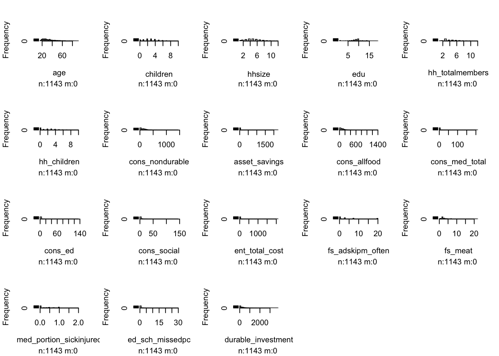

Exploratory Data Analysis
library(tidyverse)
library(dplyr)
library(dslabs)
library(ggplot2)
library(lubridate)
library(caret)
library(HistData)
library(Lahman)
library(purrr)
library(pdftools)
library(broom)
library(stringr)
library(tidyr)
library(readr)Exploratory Data Analysis
dat <- read_csv('./data/train.csv')
var_explain <- read_csv('./data/var_explain.csv')
var_explain## # A tibble: 75 × 2
## name detail
## <chr> <chr>
## 1 surveyid Individual Identifier
## 2 village Village Identifier
## 3 survey_date Date of Interview (days since Jan1 of first year)
## 4 femaleres Female respondent
## 5 age Age (respondent)
## 6 married Marital status (respondent)
## 7 children Number of children
## 8 hhsize Household size
## 9 edu Years of education completed (respondent)
## 10 hh_children Number of children <=18 or younger in Household
## # … with 65 more rowsglimpse(dat)## Rows: 1,143
## Columns: 75
## $ surveyid <dbl> 926, 747, 1190, 1065, 806, 483, 849, 1386, 930…
## $ village <dbl> 91, 57, 115, 97, 42, 25, 130, 72, 195, 33, 52,…
## $ survey_date <chr> "23-Nov-61", "24-Oct-61", "05-Oct-61", "23-Sep…
## $ femaleres <dbl> 1, 1, 1, 1, 0, 1, 0, 1, 1, 1, 1, 1, 1, 1, 1, 1…
## $ age <dbl> 28.0, 23.0, 22.0, 27.0, 59.0, 35.0, 34.0, 21.0…
## $ married <dbl> 1, 1, 1, 1, 0, 1, 0, 1, 1, 1, 0, 0, 1, 1, 1, 1…
## $ children <dbl> 4, 3, 3, 2, 4, 6, 1, 2, 7, 4, 0, 2, 4, 4, 0, 2…
## $ hhsize <dbl> 6, 5, 5, 4, 6, 8, 3, 4, 9, 6, 1, 3, 6, 6, 2, 5…
## $ edu <dbl> 10, 8, 9, 10, 10, 10, 9, 10, 9, 10, 1, 9, 10, …
## $ hh_children <dbl> 0, 0, 0, 2, 4, 6, 1, 2, 7, 0, 0, 2, 4, 4, 0, 2…
## $ hh_totalmembers <dbl> NA, NA, NA, 4, 6, 8, 3, 4, 9, NA, NA, 3, 6, 6,…
## $ cons_nondurable <dbl> 0.00000, 0.00000, 0.00000, 378.83292, 258.6718…
## $ asset_livestock <dbl> 0.000000, 0.000000, 0.000000, 526.671080, 8.26…
## $ asset_durable <dbl> 0.00000, 0.00000, 0.00000, 196.98904, 173.5265…
## $ asset_phone <dbl> 0.00000, 0.00000, 0.00000, 24.02305, 19.21844,…
## $ asset_savings <dbl> 0.000000, 0.000000, 0.000000, 49.647648, 0.000…
## $ asset_land_owned_total <dbl> 0.00, 0.00, 0.00, 0.00, 0.50, 1.70, 1.00, 0.00…
## $ asset_niceroof <dbl> 0, 0, 0, 0, 0, 0, 0, 0, 0, 0, 0, 0, 0, 0, 0, 0…
## $ cons_allfood <dbl> 0.00000, 0.00000, 0.00000, 289.17352, 173.0109…
## $ cons_ownfood <dbl> 0.0000000, 0.0000000, 0.0000000, 36.4349670, 0…
## $ cons_alcohol <dbl> 0, 0, 0, 0, 0, NA, 0, 0, 0, 0, 0, 0, 0, 0, 0, …
## $ cons_tobacco <dbl> 0.000000, 0.000000, 0.000000, 0.000000, 0.0000…
## $ cons_med_total <dbl> 0.0000000, 0.0000000, 0.0000000, 4.1639962, 0.…
## $ cons_med_children <dbl> NA, NA, NA, 0.9609222, 0.8007685, 0.0000000, 0…
## $ cons_ed <dbl> 0.0000000, 0.0000000, 0.0000000, 1.6816138, 2.…
## $ cons_social <dbl> 0.00000000, 0.00000000, 0.00000000, 39.7715000…
## $ cons_other <dbl> 0.000000, 0.000000, 0.000000, 44.042267, 74.50…
## $ ent_wagelabor <dbl> 0, 0, 0, 0, 1, 0, 0, 0, 1, 0, 0, 0, 0, 0, 0, 0…
## $ ent_ownfarm <dbl> 0, 0, 0, 1, 0, 1, 0, 0, 0, 0, 0, 0, 0, 1, 1, 1…
## $ ent_business <dbl> 0, 0, 0, 0, 0, 0, 0, 1, 0, 0, 0, 0, 0, 0, 0, 0…
## $ ent_nonagbusiness <dbl> 0, 0, 0, 1, 0, 1, 0, 0, 0, 0, 0, 0, 0, 0, 0, 0…
## $ ent_employees <dbl> 0, 0, 0, 0, 0, 0, 0, 0, 0, 0, 0, 0, 0, 0, 0, 0…
## $ ent_nonag_revenue <dbl> 0.000000, 0.000000, 0.000000, 32.030739, 0.000…
## $ ent_nonag_flowcost <dbl> 0.000000, 0.000000, 0.000000, 0.000000, 0.0000…
## $ ent_farmrevenue <dbl> 0.0000000, 0.0000000, 0.0000000, 22.2880550, 0…
## $ ent_farmexpenses <dbl> 0.00000000, 0.00000000, 0.00000000, 1.87513290…
## $ ent_animalstockrev <dbl> 0.000000, 0.000000, 0.000000, 16.282293, 0.000…
## $ ent_total_cost <dbl> 0.00000000, 0.00000000, 0.00000000, 17.8905030…
## $ fs_adskipm_often <dbl> 0.0, 0.0, 0.0, 0.0, 0.0, 7.5, 20.0, 0.0, 3.0, …
## $ fs_adwholed_often <dbl> 0.0, 0.0, 0.0, 0.0, 0.0, 3.0, 3.0, 0.0, 0.0, 0…
## $ fs_chskipm_often <dbl> NA, NA, NA, 0.0, 0.0, 7.5, 20.0, 0.0, 3.0, NA,…
## $ fs_chwholed_often <dbl> NA, NA, NA, 0, 0, 0, 0, 0, 0, NA, NA, 0, 0, 0,…
## $ fs_meat <dbl> NA, NA, NA, 3, 2, 1, 1, 4, 4, NA, NA, 3, 4, 4,…
## $ fs_enoughtom <dbl> NA, NA, NA, 1, 0, 1, 0, 1, 1, NA, NA, 0, 0, 1,…
## $ fs_sleephun <dbl> NA, NA, NA, 1, 0, 1, 1, 0, 0, NA, NA, 0, 1, 0,…
## $ med_expenses_hh_ep <dbl> NA, NA, NA, NA, NA, 1.60153700, 0.05338457, 0.…
## $ med_expenses_sp_ep <dbl> NA, NA, NA, NA, NA, NA, NA, NA, NA, NA, NA, NA…
## $ med_expenses_child_ep <dbl> NA, NA, NA, NA, 1.2331835, NA, 0.1601537, 0.80…
## $ med_portion_sickinjured <dbl> NA, NA, NA, 0.0000000, 0.3333333, 0.1250000, 1…
## $ med_port_sick_child <dbl> NA, NA, NA, 0.0000000, 0.2500000, 0.0000000, 1…
## $ med_afford_port <dbl> NA, NA, NA, NA, 0.5000000, 1.0000000, 0.333333…
## $ med_sickdays_hhave <dbl> NA, NA, NA, 0.0000000, 1.1666666, 0.8750000, 0…
## $ med_healthconsult <dbl> NA, NA, NA, NA, 1.0000000, 0.0000000, 0.000000…
## $ med_vacc_newborns <dbl> 1, 1, 1, 1, 1, 1, 1, 1, 1, 1, 1, 1, 1, 1, 1, 1…
## $ med_child_check <dbl> 1, 1, 1, 1, 1, 1, 1, 1, 1, 1, 1, 1, 1, 1, 1, 1…
## $ med_u5_deaths <dbl> NA, NA, NA, NA, NA, NA, NA, NA, NA, NA, NA, NA…
## $ ed_expenses <dbl> NA, NA, NA, 20.179367, 27.226130, 32.030739, 6…
## $ ed_expenses_perkid <dbl> NA, NA, NA, 10.089684, 6.806532, 6.406148, 6.4…
## $ ed_schoolattend <dbl> NA, NA, NA, 0.5000000, 0.7500000, 0.8000000, 1…
## $ ed_sch_missedpc <dbl> NA, NA, NA, 1.5000000, 1.7500000, 0.0000000, 0…
## $ ed_work_act_pc <dbl> NA, NA, NA, 0.0000000, 1.2500000, 1.5000000, 1…
## $ labor_primary <dbl> 0, 0, 0, 0, 1, 0, 0, 0, 1, 0, 0, 1, 0, 0, 0, 0…
## $ wage_expenditures <dbl> 0, 0, 0, 0, 0, 0, 0, 0, 0, 0, 0, 0, 0, 0, 0, 0…
## $ durable_investment <dbl> 0.0000, 0.0000, 0.0000, 778.1123, 201.0056, 44…
## $ nondurable_investment <dbl> 0.0000000, 0.0000000, 0.0000000, 69.2197650, 4…
## $ given_mpesa <dbl> 0, 0, 0, 0, 0, 0, 0, 0, 0, 0, 0, 0, 0, 0, 0, 0…
## $ amount_given_mpesa <dbl> 0, 0, 0, 0, 0, 0, 0, 0, 0, 0, 0, 0, 0, 0, 0, 0…
## $ received_mpesa <dbl> 0, 1, 0, 0, 0, 0, 0, 0, 0, 0, 0, 0, 0, 0, 0, 0…
## $ amount_received_mpesa <dbl> 0.000000, 4.804611, 8.007685, 0.000000, 0.0000…
## $ net_mpesa <dbl> 0.000000, 4.804611, 8.007685, 0.000000, 0.0000…
## $ saved_mpesa <dbl> 1, 0, 1, 1, 0, 0, 0, 0, 0, 0, 0, 0, 0, 1, 0, 0…
## $ amount_saved_mpesa <dbl> 0.000000, 0.000000, 0.000000, 1.249199, 0.0000…
## $ early_survey <dbl> 0, 0, 0, 0, 0, 0, 0, 0, 0, 0, 0, 1, 0, 0, 1, 0…
## $ depressed <dbl> 0, 1, 0, 0, 0, 0, 1, 0, 0, 0, 1, 0, 0, 0, 1, 0…
## $ day_of_week <dbl> 5, 3, 5, 0, 3, 6, 3, 1, 1, 3, 5, 5, 6, 2, 4, 4…dat$Class<-as.factor(dat$depressed) # convert class to factor
levels(dat$Class) <- c('not_depressed', 'depressed') # names of factors
summary(dat$Class)## not_depressed depressed
## 950 193head(summary(dat))## surveyid village survey_date femaleres
## Min. : 1.0 Min. : 1.00 Length:1143 Min. :0.0000
## 1st Qu.: 351.5 1st Qu.: 23.00 Class :character 1st Qu.:1.0000
## Median : 717.0 Median : 57.00 Mode :character Median :1.0000
## Mean : 715.9 Mean : 76.41 Mean :0.9169
## 3rd Qu.:1078.5 3rd Qu.:105.50 3rd Qu.:1.0000
## Max. :1429.0 Max. :292.00 Max. :1.0000
## age married children hhsize
## Min. :17.00 Min. :0.0000 Min. : 0.00 Min. : 1.00
## 1st Qu.:24.00 1st Qu.:1.0000 1st Qu.: 2.00 1st Qu.: 3.00
## Median :30.00 Median :1.0000 Median : 3.00 Median : 5.00
## Mean :34.54 Mean :0.7725 Mean : 2.86 Mean : 4.87
## 3rd Qu.:41.00 3rd Qu.:1.0000 3rd Qu.: 4.00 3rd Qu.: 6.00
## Max. :91.00 Max. :1.0000 Max. :10.00 Max. :12.00
## edu hh_children hh_totalmembers cons_nondurable
## Min. : 1.000 Min. : 0.000 Min. : 1.000 Min. : 0.0
## 1st Qu.: 8.000 1st Qu.: 0.000 1st Qu.: 3.000 1st Qu.: 0.0
## Median : 9.000 Median : 2.000 Median : 5.000 Median : 107.4
## Mean : 8.736 Mean : 2.018 Mean : 4.906 Mean : 128.4
## 3rd Qu.:10.000 3rd Qu.: 3.000 3rd Qu.: 6.000 3rd Qu.: 188.5
## Max. :19.000 Max. :10.000 Max. :12.000 Max. :1431.6
## asset_livestock asset_durable asset_phone asset_savings
## Min. : 0.00 Min. : 0.0 Min. : 0.00 Min. : 0.00
## 1st Qu.: 0.00 1st Qu.: 0.0 1st Qu.: 0.00 1st Qu.: 0.00
## Median : 16.52 Median : 121.7 Median : 0.00 Median : 0.00
## Mean : 113.70 Mean : 148.6 Mean : 19.66 Mean : 10.25
## 3rd Qu.: 102.57 3rd Qu.: 221.9 3rd Qu.: 32.03 3rd Qu.: 0.00
## Max. :2754.53 Max. :3720.4 Max. :192.18 Max. :2242.15
## asset_land_owned_total asset_niceroof cons_allfood cons_ownfood
## Min. : 0.0000 Min. :0.0000000 Min. : 0.00 Min. : 0.000
## 1st Qu.: 0.0000 1st Qu.:0.0000000 1st Qu.: 0.00 1st Qu.: 0.000
## Median : 0.0000 Median :0.0000000 Median : 77.11 Median : 3.203
## Mean : 0.9269 Mean :0.0008749 Mean : 95.81 Mean : 8.324
## 3rd Qu.: 1.5000 3rd Qu.:0.0000000 3rd Qu.: 136.84 3rd Qu.: 9.823
## Max. :27.0000 Max. :1.0000000 Max. :1386.97 Max. :181.574
## cons_alcohol cons_tobacco cons_med_total cons_med_children
## Min. : 0.000 Min. : 0.0000 Min. : 0.00 Min. : 0.00
## 1st Qu.: 0.000 1st Qu.: 0.0000 1st Qu.: 0.00 1st Qu.: 0.00
## Median : 0.000 Median : 0.0000 Median : 0.00 Median : 0.00
## Mean : 1.178 Mean : 0.6348 Mean : 2.69 Mean : 1.83
## 3rd Qu.: 0.000 3rd Qu.: 0.0000 3rd Qu.: 0.00 3rd Qu.: 0.00
## Max. :104.672 Max. :41.8687 Max. :206.60 Max. :206.60
## cons_ed cons_social cons_other ent_wagelabor
## Min. : 0.0000 Min. : 0.000 Min. : 0.00 Min. :0.0000
## 1st Qu.: 0.0000 1st Qu.: 0.000 1st Qu.: 0.00 1st Qu.:0.0000
## Median : 0.4671 Median : 1.281 Median : 13.77 Median :0.0000
## Mean : 2.7948 Mean : 3.648 Mean : 21.71 Mean :0.1864
## 3rd Qu.: 2.4023 3rd Qu.: 3.817 3rd Qu.: 30.91 3rd Qu.:0.0000
## Max. :133.4614 Max. :140.134 Max. :289.09 Max. :1.0000
## ent_ownfarm ent_business ent_nonagbusiness ent_employees
## Min. :0.0000 Min. :0.0000 Min. :0.0000 Min. : 0.00000
## 1st Qu.:0.0000 1st Qu.:0.0000 1st Qu.:0.0000 1st Qu.: 0.00000
## Median :0.0000 Median :0.0000 Median :0.0000 Median : 0.00000
## Mean :0.2476 Mean :0.1076 Mean :0.2695 Mean : 0.03237
## 3rd Qu.:0.0000 3rd Qu.:0.0000 3rd Qu.:1.0000 3rd Qu.: 0.00000
## Max. :1.0000 Max. :1.0000 Max. :1.0000 Max. :11.00000
## ent_nonag_revenue ent_nonag_flowcost ent_farmrevenue ent_farmexpenses
## Min. : 0.00 Min. : 0.00 Min. : 0.000 Min. : 0.0000
## 1st Qu.: 0.00 1st Qu.: 0.00 1st Qu.: 0.000 1st Qu.: 0.0000
## Median : 0.00 Median : 0.00 Median : 2.135 Median : 0.4883
## Mean : 34.85 Mean : 17.32 Mean : 4.516 Mean : 1.8667
## 3rd Qu.: 0.00 3rd Qu.: 0.00 3rd Qu.: 5.752 3rd Qu.: 2.1551
## Max. :7687.38 Max. :2067.58 Max. :161.355 Max. :38.0588
## ent_animalstockrev ent_total_cost fs_adskipm_often fs_adwholed_often
## Min. : 0.000 Min. : 0.00 Min. : 0.000 Min. : 0.0000
## 1st Qu.: 0.000 1st Qu.: 0.00 1st Qu.: 0.000 1st Qu.: 0.0000
## Median : 0.000 Median : 1.24 Median : 1.000 Median : 0.0000
## Mean : 3.932 Mean : 21.41 Mean : 4.043 Mean : 0.9103
## 3rd Qu.: 2.736 3rd Qu.: 10.22 3rd Qu.: 5.250 3rd Qu.: 0.0000
## Max. :176.169 Max. :2067.58 Max. :20.000 Max. :20.0000
## fs_chskipm_often fs_chwholed_often fs_meat fs_enoughtom
## Min. : 0.0 Min. : 0.0000 Min. : 0.00 Min. :0.0000
## 1st Qu.: 0.0 1st Qu.: 0.0000 1st Qu.: 2.00 1st Qu.:0.0000
## Median : 0.0 Median : 0.0000 Median : 3.00 Median :0.0000
## Mean : 2.9 Mean : 0.4409 Mean : 3.07 Mean :0.2744
## 3rd Qu.: 3.0 3rd Qu.: 0.0000 3rd Qu.: 4.00 3rd Qu.:1.0000
## Max. :20.0 Max. :20.0000 Max. :22.00 Max. :1.0000
## fs_sleephun med_expenses_hh_ep med_expenses_sp_ep med_expenses_child_ep
## Min. :0.0000 Min. : 0.0000 Min. : 0.0000 Min. : 0.0000
## 1st Qu.:0.0000 1st Qu.: 0.9209 1st Qu.: 0.7207 1st Qu.: 0.5392
## Median :0.0000 Median : 2.6085 Median : 3.2031 Median : 1.4414
## Mean :0.3671 Mean : 5.6260 Mean : 8.0519 Mean : 3.7224
## 3rd Qu.:1.0000 3rd Qu.: 5.8656 3rd Qu.: 8.0077 3rd Qu.: 4.0038
## Max. :1.0000 Max. :124.1725 Max. :184.1768 Max. :320.3074
## med_portion_sickinjured med_port_sick_child med_afford_port
## Min. :0.0000 Min. :0.0000 Min. :0.0000
## 1st Qu.:0.2500 1st Qu.:0.1667 1st Qu.:0.6667
## Median :0.5000 Median :0.5000 Median :1.0000
## Mean :0.5198 Mean :0.4964 Mean :0.7974
## 3rd Qu.:0.7500 3rd Qu.:1.0000 3rd Qu.:1.0000
## Max. :2.0000 Max. :1.0000 Max. :1.0000
## med_sickdays_hhave med_healthconsult med_vacc_newborns med_child_check
## Min. : 0.000 Min. :0.0000 Min. :1 Min. :1
## 1st Qu.: 0.000 1st Qu.:0.5000 1st Qu.:1 1st Qu.:1
## Median : 1.000 Median :1.0000 Median :1 Median :1
## Mean : 1.956 Mean :0.6954 Mean :1 Mean :1
## 3rd Qu.: 2.400 3rd Qu.:1.0000 3rd Qu.:1 3rd Qu.:1
## Max. :31.000 Max. :1.0000 Max. :1 Max. :1
## med_u5_deaths ed_expenses ed_expenses_perkid ed_schoolattend
## Min. :0.2000 Min. : 0.000 Min. : 0.000 Min. :0.0000
## 1st Qu.:0.3333 1st Qu.: 9.609 1st Qu.: 3.844 1st Qu.:0.5000
## Median :0.5000 Median : 22.422 Median : 9.042 Median :0.7889
## Mean :0.5105 Mean : 52.935 Mean : 18.612 Mean :0.7047
## 3rd Qu.:0.5000 3rd Qu.: 44.082 3rd Qu.: 19.218 3rd Qu.:1.0000
## Max. :1.0000 Max. :1601.537 Max. :186.846 Max. :1.5000
## ed_sch_missedpc ed_work_act_pc labor_primary wage_expenditures
## Min. : 0.0000 Min. :0.000 Min. :0.0000 Min. : 0.00
## 1st Qu.: 0.0000 1st Qu.:0.000 1st Qu.:0.0000 1st Qu.: 0.00
## Median : 0.3333 Median :0.500 Median :0.0000 Median : 0.00
## Mean : 1.3556 Mean :0.745 Mean :0.2213 Mean : 24.36
## 3rd Qu.: 1.6875 3rd Qu.:1.000 3rd Qu.:0.0000 3rd Qu.: 0.00
## Max. :30.0000 Max. :5.000 Max. :1.0000 Max. :27000.00
## durable_investment nondurable_investment given_mpesa amount_given_mpesa
## Min. : 0.0 Min. : 0.000 Min. :0.00000 Min. : 0.0000
## 1st Qu.: 0.0 1st Qu.: 0.000 1st Qu.:0.00000 1st Qu.: 0.0000
## Median : 188.8 Median : 4.582 Median :0.00000 Median : 0.0000
## Mean : 288.5 Mean : 34.464 Mean :0.01575 Mean : 0.5535
## 3rd Qu.: 399.1 3rd Qu.: 21.917 3rd Qu.:0.00000 3rd Qu.: 0.0000
## Max. :3782.3 Max. :2275.473 Max. :1.00000 Max. :160.1537
## received_mpesa amount_received_mpesa net_mpesa saved_mpesa
## Min. :0.00000 Min. : 0.000 Min. :-160.154 Min. :0.000
## 1st Qu.:0.00000 1st Qu.: 0.000 1st Qu.: 0.000 1st Qu.:0.000
## Median :0.00000 Median : 0.000 Median : 0.000 Median :0.000
## Mean :0.06649 Mean : 3.565 Mean : 3.011 Mean :0.189
## 3rd Qu.:0.00000 3rd Qu.: 0.000 3rd Qu.: 0.000 3rd Qu.:0.000
## Max. :1.00000 Max. :352.338 Max. : 352.338 Max. :1.000
## amount_saved_mpesa early_survey depressed day_of_week
## Min. : 0.000 Min. :0.00000 Min. :0.0000 Min. :0.000
## 1st Qu.: 0.000 1st Qu.:0.00000 1st Qu.:0.0000 1st Qu.:2.000
## Median : 0.000 Median :0.00000 Median :0.0000 Median :3.000
## Mean : 2.269 Mean :0.09799 Mean :0.1689 Mean :3.296
## 3rd Qu.: 0.000 3rd Qu.:0.00000 3rd Qu.:0.0000 3rd Qu.:5.000
## Max. :488.469 Max. :1.00000 Max. :1.0000 Max. :6.000
## Class
## not_depressed:950
## depressed :193
##
##
##
## depressed_sub <- dat %>% filter(depressed == 1)
nrow(depressed_sub)## [1] 193depressed_percent <- nrow(depressed_sub)/nrow(dat)
depressed_percent## [1] 0.1688539prop.table(table(dat$depressed))##
## 0 1
## 0.8311461 0.1688539# EDA
ggplot(data = dat, aes(fill = Class)) +geom_bar(aes(x = Class))dat_depressed <- dat %>% filter(depressed == 1)
dat_notDepressed <- dat %>% filter(depressed == 0)Missing Data
#check for missing data
anyNA(dat)## [1] TRUEsum(is.na(dat))## [1] 10262col_NA <- colnames(dat)[colSums(is.na(dat)) > 0]
col_NA## [1] "hh_totalmembers" "cons_alcohol"
## [3] "cons_tobacco" "cons_med_children"
## [5] "fs_chskipm_often" "fs_chwholed_often"
## [7] "fs_meat" "fs_enoughtom"
## [9] "fs_sleephun" "med_expenses_hh_ep"
## [11] "med_expenses_sp_ep" "med_expenses_child_ep"
## [13] "med_portion_sickinjured" "med_port_sick_child"
## [15] "med_afford_port" "med_sickdays_hhave"
## [17] "med_healthconsult" "med_u5_deaths"
## [19] "ed_expenses" "ed_expenses_perkid"
## [21] "ed_schoolattend" "ed_sch_missedpc"
## [23] "ed_work_act_pc"#look at rows with missing data
dat_NA <- dat[!complete.cases(dat), ]
nrow(na.omit(dat))## [1] 12#look at missing pattern
library(ggmice)
plot_pattern(dat[, col_NA])
for(i in 1:length(col_NA)){
dat[col_NA[i]][is.na(dat[col_NA[i]])] <- round(sum(dat[col_NA[i]], na.rm=TRUE)/nrow(dat))
}
anyNA(dat)## [1] FALSEcols <- colnames(dat)
cols## [1] "surveyid" "village"
## [3] "survey_date" "femaleres"
## [5] "age" "married"
## [7] "children" "hhsize"
## [9] "edu" "hh_children"
## [11] "hh_totalmembers" "cons_nondurable"
## [13] "asset_livestock" "asset_durable"
## [15] "asset_phone" "asset_savings"
## [17] "asset_land_owned_total" "asset_niceroof"
## [19] "cons_allfood" "cons_ownfood"
## [21] "cons_alcohol" "cons_tobacco"
## [23] "cons_med_total" "cons_med_children"
## [25] "cons_ed" "cons_social"
## [27] "cons_other" "ent_wagelabor"
## [29] "ent_ownfarm" "ent_business"
## [31] "ent_nonagbusiness" "ent_employees"
## [33] "ent_nonag_revenue" "ent_nonag_flowcost"
## [35] "ent_farmrevenue" "ent_farmexpenses"
## [37] "ent_animalstockrev" "ent_total_cost"
## [39] "fs_adskipm_often" "fs_adwholed_often"
## [41] "fs_chskipm_often" "fs_chwholed_often"
## [43] "fs_meat" "fs_enoughtom"
## [45] "fs_sleephun" "med_expenses_hh_ep"
## [47] "med_expenses_sp_ep" "med_expenses_child_ep"
## [49] "med_portion_sickinjured" "med_port_sick_child"
## [51] "med_afford_port" "med_sickdays_hhave"
## [53] "med_healthconsult" "med_vacc_newborns"
## [55] "med_child_check" "med_u5_deaths"
## [57] "ed_expenses" "ed_expenses_perkid"
## [59] "ed_schoolattend" "ed_sch_missedpc"
## [61] "ed_work_act_pc" "labor_primary"
## [63] "wage_expenditures" "durable_investment"
## [65] "nondurable_investment" "given_mpesa"
## [67] "amount_given_mpesa" "received_mpesa"
## [69] "amount_received_mpesa" "net_mpesa"
## [71] "saved_mpesa" "amount_saved_mpesa"
## [73] "early_survey" "depressed"
## [75] "day_of_week" "Class"library(Hmisc)
hist.data.frame(dat)

Examine continuous covariates
#family factors
pairs(depressed ~ age + children + hhsize + edu + hh_totalmembers + hh_children, dat)
#socio-economic indicating factors
pairs(depressed ~ cons_nondurable + asset_savings + cons_allfood + cons_med_total + cons_ed + cons_social + ent_total_cost, dat)# life-style/financial factors
pairs(depressed ~ fs_adskipm_often + fs_meat + med_portion_sickinjured + ed_sch_missedpc + durable_investment, dat)dat_old <- dat
# Interested/understandable factors
cov <- c("age", "children", "hhsize", "edu" , "hh_totalmembers", "hh_children", "cons_nondurable", "asset_savings", "cons_allfood", "cons_med_total", "cons_ed", "cons_social", "ent_total_cost", "fs_adskipm_often", "fs_meat", "med_portion_sickinjured", "ed_sch_missedpc", "durable_investment", "femaleres", "married", "depressed")
dat <- dat[, cov]
hist.data.frame(dat)
library(glmnet)
library(vip)
#define outcome variable
y <- dat[,"depressed"] |> as.matrix()
#define matrix of predictor variables
x <- dat[, c("age", "children", "hhsize", "edu" , "hh_totalmembers", "hh_children", "cons_nondurable", "asset_savings", "cons_allfood", "cons_med_total", "cons_ed", "cons_social", "ent_total_cost", "fs_adskipm_often", "fs_meat", "med_portion_sickinjured", "ed_sch_missedpc", "durable_investment", "femaleres", "married")] |> as.matrix()
elasticnet.mod = glmnet(x,y,alpha=0.5,family="binomial")
vip(elasticnet.mod, num_features=10, geom = "point")Regression - Association
mod_log <- glm(depressed ~ age + children + hhsize+edu + hh_totalmembers+ hh_children+ cons_nondurable+ asset_savings + cons_allfood+ cons_med_total+ cons_ed+ cons_social+ ent_total_cost+ fs_adskipm_often + fs_meat + med_portion_sickinjured+ ed_sch_missedpc+ durable_investment+ femaleres + married, data = dat, family = "binomial")
summary(mod_log)##
## Call:
## glm(formula = depressed ~ age + children + hhsize + edu + hh_totalmembers +
## hh_children + cons_nondurable + asset_savings + cons_allfood +
## cons_med_total + cons_ed + cons_social + ent_total_cost +
## fs_adskipm_often + fs_meat + med_portion_sickinjured + ed_sch_missedpc +
## durable_investment + femaleres + married, family = "binomial",
## data = dat)
##
## Deviance Residuals:
## Min 1Q Median 3Q Max
## -1.2551 -0.6223 -0.5343 -0.4313 2.3410
##
## Coefficients:
## Estimate Std. Error z value Pr(>|z|)
## (Intercept) -2.1097777 0.6476917 -3.257 0.001124 **
## age 0.0050543 0.0068460 0.738 0.460338
## children 0.4773323 0.1574719 3.031 0.002436 **
## hhsize -0.4544707 0.1557566 -2.918 0.003525 **
## edu -0.0939509 0.0316226 -2.971 0.002968 **
## hh_totalmembers 0.7167775 0.1788150 4.008 6.11e-05 ***
## hh_children -0.6235396 0.1685345 -3.700 0.000216 ***
## cons_nondurable -0.0006877 0.0035929 -0.191 0.848203
## asset_savings 0.0001734 0.0012060 0.144 0.885682
## cons_allfood 0.0001879 0.0039604 0.047 0.962151
## cons_med_total 0.0065100 0.0081258 0.801 0.423040
## cons_ed -0.0013735 0.0116827 -0.118 0.906409
## cons_social 0.0009665 0.0146599 0.066 0.947435
## ent_total_cost -0.0022172 0.0018419 -1.204 0.228698
## fs_adskipm_often 0.0051131 0.0142501 0.359 0.719736
## fs_meat 0.0356918 0.0420609 0.849 0.396118
## med_portion_sickinjured 0.6976688 0.3116025 2.239 0.025158 *
## ed_sch_missedpc 0.0040800 0.0390692 0.104 0.916829
## durable_investment 0.0001230 0.0002654 0.463 0.643063
## femaleres -0.0038577 0.3159358 -0.012 0.990258
## married -0.3280793 0.2305697 -1.423 0.154763
## ---
## Signif. codes: 0 '***' 0.001 '**' 0.01 '*' 0.05 '.' 0.1 ' ' 1
##
## (Dispersion parameter for binomial family taken to be 1)
##
## Null deviance: 1037.99 on 1142 degrees of freedom
## Residual deviance: 992.72 on 1122 degrees of freedom
## AIC: 1034.7
##
## Number of Fisher Scoring iterations: 5# Influence plot
library(car)
par(mfrow=c(1,1))
influencePlot(mod_log,col="red")## StudRes Hat CookD
## 33 -1.2011290 0.403660391 0.035167313
## 118 2.3648827 0.007682324 0.005383474
## 500 2.3354113 0.010175991 0.006567766
## 1138 -0.7725291 0.720221616 0.058746698covMatrix <- vcov(mod_log)
corrMatrix <- cov2cor(covMatrix)
head(corrMatrix) ## (Intercept) age children hhsize edu
## (Intercept) 1.0000000 -0.58767242 -0.18049261 0.18897697 -0.58872619
## age -0.5876724 1.00000000 0.09229649 -0.09271652 0.40079131
## children -0.1804926 0.09229649 1.00000000 -0.90268108 -0.10778845
## hhsize 0.1889770 -0.09271652 -0.90268108 1.00000000 0.03711347
## edu -0.5887262 0.40079131 -0.10778845 0.03711347 1.00000000
## hh_totalmembers -0.4235898 -0.06063405 0.57615604 -0.69273439 -0.01139463
## hh_totalmembers hh_children cons_nondurable asset_savings
## (Intercept) -0.42358980 0.43156832 0.003444801 -0.013502452
## age -0.06063405 0.07319592 0.034581287 0.001741527
## children 0.57615604 -0.62417872 0.064147328 -0.005961643
## hhsize -0.69273439 0.60145373 -0.041794773 0.006252783
## edu -0.01139463 0.03649214 -0.044695947 -0.045826752
## hh_totalmembers 1.00000000 -0.90814530 0.001986287 0.025328763
## cons_allfood cons_med_total cons_ed cons_social
## (Intercept) -0.008670293 0.04996853 0.105296904 0.014145616
## age -0.028757980 -0.07119577 -0.128299424 -0.006819089
## children -0.028585164 -0.05467656 0.033512947 0.002728769
## hhsize 0.017111566 0.03717695 -0.032094520 0.003791168
## edu 0.045558797 -0.03401199 -0.004050992 -0.035335073
## hh_totalmembers 0.004808727 -0.04013454 -0.059131264 0.008249273
## ent_total_cost fs_adskipm_often fs_meat
## (Intercept) -0.027830441 -0.07640406 -0.22337498
## age 0.035198495 -0.04698898 0.04521631
## children -0.012099015 0.14668604 0.06493849
## hhsize 0.003904821 -0.12115453 -0.04279511
## edu 0.016295319 -0.01262028 0.04383048
## hh_totalmembers 0.030180188 0.10383619 0.06925456
## med_portion_sickinjured ed_sch_missedpc durable_investment
## (Intercept) -0.26324192 -0.021788912 0.04064100
## age -0.05851897 0.032155090 -0.06075429
## children 0.27562869 -0.011127963 0.10962697
## hhsize -0.18595088 0.001841729 -0.06540287
## edu -0.02130557 -0.033168424 -0.06908299
## hh_totalmembers 0.40329323 -0.041375660 0.03272123
## femaleres married
## (Intercept) -0.455430806 -0.139090882
## age 0.080565443 0.376339515
## children 0.006614439 0.202703509
## hhsize -0.072182383 -0.258845794
## edu 0.209934920 -0.059728286
## hh_totalmembers 0.037148208 0.005046537#up sampling for imbalanced data
set.seed(260)
datdown <- downSample(x=dat[, -which(names(dat) == "depressed")], y=dat$depressed)
prop.table(table(datdown$y))##
## 0 1
## 0.8311461 0.1688539#ROSE algorithm
library(ROSE)
drose <- ROSE(depressed ~ ., N = 1900, data = dat, seed = 260)$data
table(drose$depressed)##
## 0 1
## 919 981mod_log <- glm(depressed ~ age + children + hhsize + edu + cons_nondurable+ asset_savings + cons_ed+ cons_social+ ent_total_cost+ fs_adskipm_often + fs_meat + med_portion_sickinjured+ ed_sch_missedpc+ durable_investment+ femaleres + married, data = drose, family = "binomial")
summary(mod_log)##
## Call:
## glm(formula = depressed ~ age + children + hhsize + edu + cons_nondurable +
## asset_savings + cons_ed + cons_social + ent_total_cost +
## fs_adskipm_often + fs_meat + med_portion_sickinjured + ed_sch_missedpc +
## durable_investment + femaleres + married, family = "binomial",
## data = drose)
##
## Deviance Residuals:
## Min 1Q Median 3Q Max
## -1.7151 -1.1573 0.8263 1.1338 1.5769
##
## Coefficients:
## Estimate Std. Error z value Pr(>|z|)
## (Intercept) 0.0927268 0.2519738 0.368 0.712872
## age 0.0097250 0.0028571 3.404 0.000665 ***
## children 0.0882823 0.0254831 3.464 0.000532 ***
## hhsize -0.0318516 0.0224236 -1.420 0.155477
## edu -0.0369448 0.0133767 -2.762 0.005747 **
## cons_nondurable 0.0001762 0.0003319 0.531 0.595549
## asset_savings 0.0011554 0.0008599 1.344 0.179055
## cons_ed -0.0045480 0.0053931 -0.843 0.399061
## cons_social 0.0029860 0.0061296 0.487 0.626158
## ent_total_cost -0.0010053 0.0005321 -1.889 0.058860 .
## fs_adskipm_often 0.0065435 0.0063446 1.031 0.302379
## fs_meat 0.0308384 0.0210498 1.465 0.142914
## med_portion_sickinjured -0.0478709 0.1148262 -0.417 0.676753
## ed_sch_missedpc 0.0450466 0.0199663 2.256 0.024062 *
## durable_investment -0.0001188 0.0001003 -1.184 0.236233
## femaleres -0.1071566 0.1401211 -0.765 0.444425
## married -0.2660823 0.0958471 -2.776 0.005501 **
## ---
## Signif. codes: 0 '***' 0.001 '**' 0.01 '*' 0.05 '.' 0.1 ' ' 1
##
## (Dispersion parameter for binomial family taken to be 1)
##
## Null deviance: 2631.9 on 1899 degrees of freedom
## Residual deviance: 2561.4 on 1883 degrees of freedom
## AIC: 2595.4
##
## Number of Fisher Scoring iterations: 4influenceIndexPlot(mod_log)
library(corrplot)
correlations <- cor(dat[, -12], use = "pairwise.complete.obs")
corrplot(correlations, method='number')corrplot.mixed(correlations,upper = "circle", lower = "number", tl.col = "black", tl.pos = "lt") summary(mod_log)$coefficients## Estimate Std. Error z value Pr(>|z|)
## (Intercept) 0.0927267778 0.2519737854 0.3680017 0.7128719772
## age 0.0097250035 0.0028571003 3.4038019 0.0006645493
## children 0.0882823064 0.0254830912 3.4643484 0.0005315176
## hhsize -0.0318515991 0.0224235997 -1.4204499 0.1554767556
## edu -0.0369447546 0.0133766727 -2.7618792 0.0057469730
## cons_nondurable 0.0001761661 0.0003318808 0.5308114 0.5955494545
## asset_savings 0.0011554402 0.0008599139 1.3436696 0.1790552446
## cons_ed -0.0045480196 0.0053931239 -0.8432997 0.3990608750
## cons_social 0.0029859948 0.0061296320 0.4871410 0.6261584393
## ent_total_cost -0.0010052561 0.0005320965 -1.8892363 0.0588601755
## fs_adskipm_often 0.0065435085 0.0063446332 1.0313454 0.3023788642
## fs_meat 0.0308384289 0.0210497812 1.4650237 0.1429144437
## med_portion_sickinjured -0.0478708512 0.1148261792 -0.4168984 0.6767527191
## ed_sch_missedpc 0.0450466222 0.0199662671 2.2561364 0.0240620892
## durable_investment -0.0001188064 0.0001003048 -1.1844539 0.2362334463
## femaleres -0.1071565616 0.1401210982 -0.7647425 0.4444248823
## married -0.2660822913 0.0958471106 -2.7761118 0.0055013293library(pROC)
predprob <- predict(mod_log,type=c("response"))
roccurve <- roc(drose$depressed ~ predprob)
plot(roccurve,col="red")roccurve##
## Call:
## roc.formula(formula = drose$depressed ~ predprob)
##
## Data: predprob in 919 controls (drose$depressed 0) < 981 cases (drose$depressed 1).
## Area under the curve: 0.6066library(rpart)
#build decision tree models
tree.rose <- rpart(depressed ~ ., data = drose)
pred.tree.rose <- predict(tree.rose, newdata = drose)
roc.curve(drose$depressed, pred.tree.rose)
## Area under the curve (AUC): 0.854#calculate and intepret the coefficients the odds ratio and 95% CI
exp(cbind(OR = coef(mod_log), confint(mod_log)))## OR 2.5 % 97.5 %
## (Intercept) 1.0971619 0.6696062 1.7989057
## age 1.0097724 1.0041529 1.0154683
## children 1.0922964 1.0392387 1.1484693
## hhsize 0.9686503 0.9269281 1.0121389
## edu 0.9637294 0.9386972 0.9892606
## cons_nondurable 1.0001762 0.9995261 1.0008287
## asset_savings 1.0011561 0.9994846 1.0028866
## cons_ed 0.9954623 0.9848940 1.0060123
## cons_social 1.0029905 0.9910073 1.0151368
## ent_total_cost 0.9989952 0.9978965 0.9999837
## fs_adskipm_often 1.0065650 0.9941403 1.0191903
## fs_meat 1.0313189 0.9896764 1.0748658
## med_portion_sickinjured 0.9532569 0.7610186 1.1939373
## ed_sch_missedpc 1.0460766 1.0061889 1.0882737
## durable_investment 0.9998812 0.9996839 1.0000776
## femaleres 0.8983850 0.6820165 1.1818006
## married 0.7663761 0.6347538 0.9243907We can interpret these coefficients in terms of odds ratios. For example, for a one unit increase in the number of children one has, the odds of being depressed (versus not being depressed) increase by a factor of 1.1225961, on average, holding all other covariates fixed.